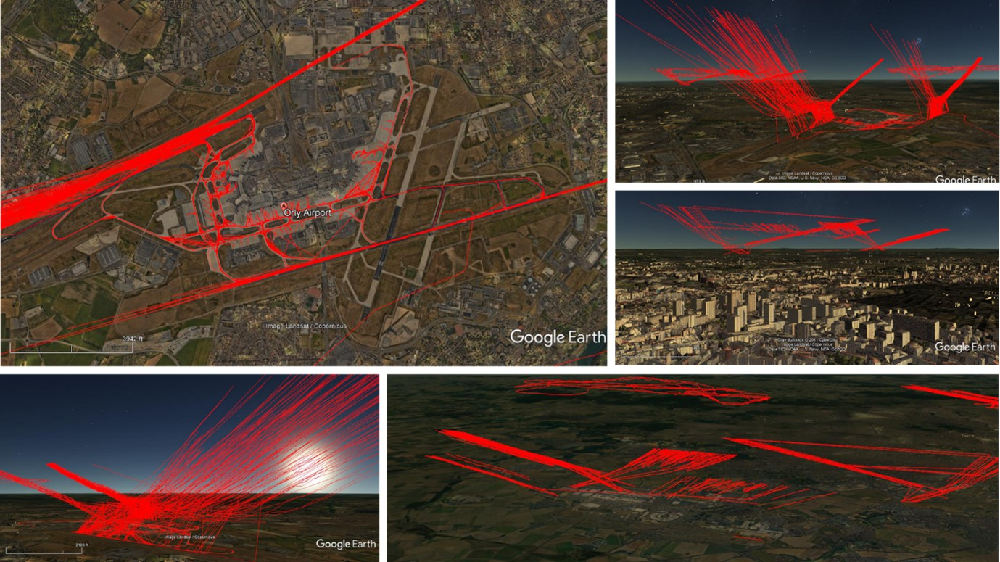

Expériences¶
Ingénieur Géomaticien — Airparif (observatoire de la qualité de l’air)¶
Depuis Septembre 2022
En tant qu’ingénieur SIG au sein de l’association Airparif, j’interviens de manière transversale sur un large éventail de projets.
1. Chaîne opérationnelle de prévision de la qualité de l’air¶
Préparation des données d’entrée et validation des résultats des modèles de qualité de l’air par rapport aux stations de mesure ;
Transformation des sorties des modèles (NetCDF, Zarr) en produits et services cartographiques publiables via GeoServer et des API ;
Automatisation et industrialisation du pipeline complet (exécution quotidienne) avec un flux DevOps sur GitLab.
2. Cartographie et architecture SIG¶
Installation, sécurisation et maintenance de l’infrastructure GeoServer sur des serveurs Linux, afin de publier des services cartographiques et des produits API destinés aux sites web, aux applications, au portail Open Data et aux besoins des clients ;
Gestion des bases de données spatiales (PostGIS), des infrastructures de données spatiales et des métadonnées ;
Transformation de données atmosphériques complexes en cartes claires, destinées au grand public et aux décideurs.
3. Développement Python et formation¶
Création de scripts Python/Git pour les outils géospatiaux liés à la modélisation de la qualité de l’air et à l’automatisation CI/CD ;
Formation de collègues sans connaissance préalable des outils SIG open source (QGIS, Python pour QGIS).
4. Gestion des données¶
Mise en place d’un plan de gestion des données garantissant la fiabilité, la documentation (métadonnées générées automatiquement) et l’accessibilité, en interne comme en externe (portail Open Data et API), des jeux de données.
Développeur SIG — Origins-Earth (start-up climatique)¶
Juin 2020 - Septembre 2022
En tant que développeur SIG au sein de la start-up climatique Origins-Earth, dans le cadre de mon alternance de Master en Géomatique, j’ai eu l’opportunité de participer activement aux projets suivants :
1. Développement d’un module de calcul et spatialisation des émissions de GES du transport aérien¶
Recherche et exploitation de données ouvertes, spatiales et non spatiales : performance (consommation/émissions) des moteurs en service sur le marché du transport aérien civil, localisation des pistes d’aéroport dans le monde et trafic aérien ;
Création et gestion de la base de données avec PostGIS ;
Développement du module opérationnel de calcul et de spatialisation 3D des trajectoires et des émissions de CO2 avec Python.
Le module est écrit en Python pur, au sein d’un environnement de développement industriel. Il s’appuie sur des modules spécialisés dans la capture et le traitement de données spatiales, la connexion à des bases de données sur des serveurs distants et locaux, et la production d’informations spatiales dans des formats adaptés à la visualisation (GeoJSON, SHP, KML) ou multidimensionnels (NetCDF, Zarr).
📡 Pour ce projet, j’ai aussi installé et paramétré un récepteur de signal ADS-B, qui alimente le module de calcul avec des informations sur le trafic aérien.

2. Spatialisation des émissions de CO2 et de CH4¶
Conception et développement d’une méthodologie permettant de répartir les émissions de GES à partir d’informations spatiales et non spatiales, produites par des entités publiques et des informations Open Source. Mes contributions :
la conception de la méthodologie de distribution des émissions de GES par secteur d’activité ;
la rédaction de la documentation des méthodologies proposées.
3. Représentation des données spatiales¶
Création de cartes web interactives en 2,5D et en 3D ;
Utilisation de frameworks modernes de cartographie web, tels que DeckGL, Leaflet, Turf.js, Mappa.js, p5.js et Folium.

⚠️ Valeurs produites au hasard avec le seul objectif de générer un produit visuel
Ingénieur Cadastral¶
Septembre 2018 - Septembre 2019
En tant qu’ingénieur, j’ai travaillé au sein de la société d’expertise cadastrale APRA, où j’ai participé à des projets liés au calcul de la valeur des biens immobiliers, suivant les méthodes de comparaison du marché, la méthode de revenu ou de capitalisation du revenu, la méthode du coût de remplacement et la méthode résiduelle.
De plus, j’ai participé à la mise à jour de la base de données cadastrale et à la proposition de modèles économétriques pour déterminer la valeur de la taxe foncière de la ville de Cali en Colombie, avec une population de 2,3 millions d’habitants.
Enfin, j’ai mené un projet d’évaluation d’habitations dans des zones exposées à un risque de glissement de terrain dans la cordillère orientale de la ville de Bogotá, en Colombie, dans le cadre d’un plan de relogement de familles.
Développeur d’applications avec ArcGIS Web AppBuilder¶
Octobre 2017 - Juin 2018
Au sein de la Direction Générale Maritime de Colombie, j’ai effectué mon stage d’ingénieur ; j’ai participé à la création d’applications pour le service maritime en utilisant principalement les produits ArcGIS Enterprise, en particulier ArcGIS WebAppBuilder et ArcGIS Dashboards.
👓 Au fait, ici se trouve l’un des produits récemment réalisés avec deux talentueuses camarades de classe à l’aide des outils ArcGIS, dans le cadre d’un de mes cours du Master en géomatique.